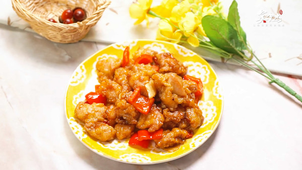
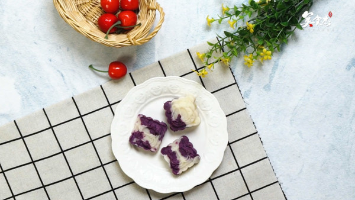
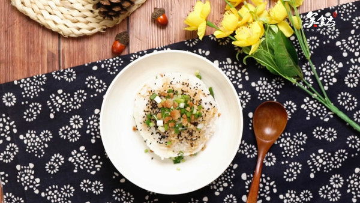
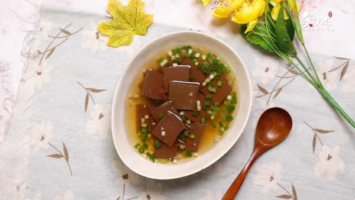
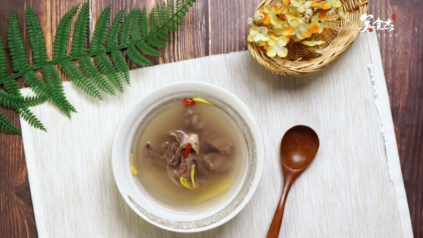
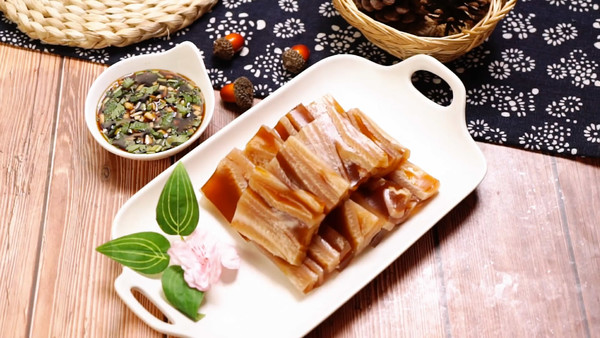
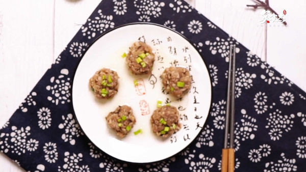
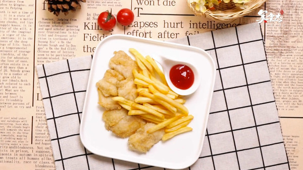
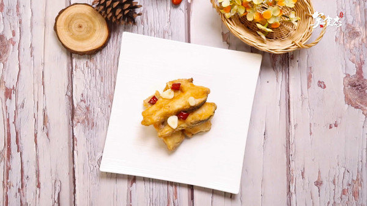

首页
菜谱大全
家常菜谱
家常菜
凉菜
素食
晚餐
私家菜
热菜
海鲜
孕妇
早餐
午餐
甜品点心
汤粥
宝宝食谱-婴儿食谱
糕点主食
微波炉
中华菜系
川菜
粤菜
东北菜
湘菜
鲁菜
浙菜
湖北菜
清真菜
各地小吃
四川小吃
广东小吃
北京小吃
陕西小吃
外国菜谱
韩国料理
日本料理
法国菜
意大利餐
烘焙
蛋糕面包
饼干配方
甜品点心
厨房百科
摆盘围边
烹饪技巧
生活妙招
美食专题
食材百科
蔬菜
水果
谷类
饮食健康
饮食健康
饮食小常识
美容瘦身
食品安全
养生妙方
饮食禁忌
中医保健
母婴健康饮食
饮食新闻
功能性调理
清热去火
减肥
祛痰
乌发
滋阴补肾
健脾开胃
消化不良
清热解毒
补阳壮阳
增肥
人群膳食
孕妇
老人
产妇
哺乳期
青少年
幼儿
学龄期儿童
疾病调理
糖尿病
高血压
痛风
胃炎
痔疮
更年期
甲状腺
脏腑调理
感冒
补肾
阳痿早泄
补血
便秘
腹泻
活血化瘀
美食菜单
家居馆
美食达人
菜谱视频
产品下载
自动收缩
回到顶部
美食杰首页
>
视频菜谱

11万次播放
01:23
左宗棠鸡的做法

11万次播放
00:48
紫薯山药糕的做法

6万次播放
00:41
猪油拌饭的做法

10万次播放
00:54
猪血汤的做法

10万次播放
00:30
猪心汤的做法

12万次播放
01:30
猪皮冻的做法
10万次播放
00:43
猪肝粥的做法
12万次播放
01:30
猪肝面的做法
12万次播放
00:39
珍珠翡翠白玉汤的做法

8万次播放
00:38
蒸肉丸的做法

11万次播放
00:47
炸鱼薯条的做法

11万次播放
00:56
炸鱼块的做法
1
2
3
4
5
下一页


 京公网安备11010802026928
京公网安备11010802026928